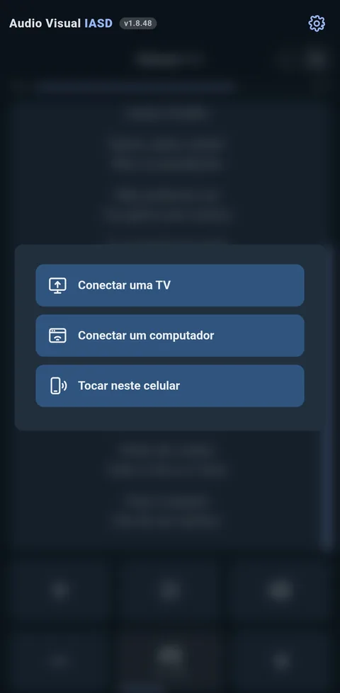
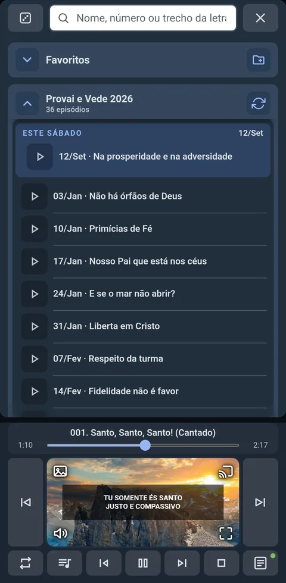
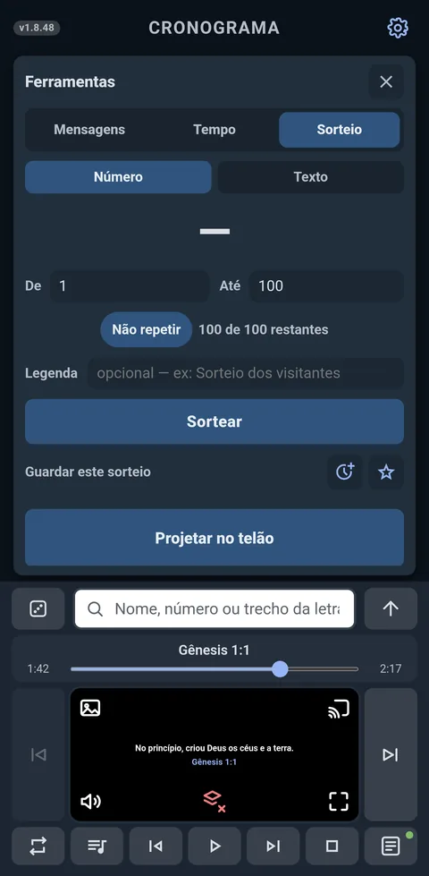
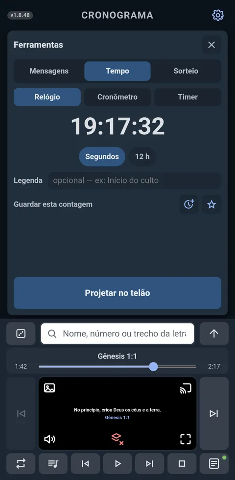
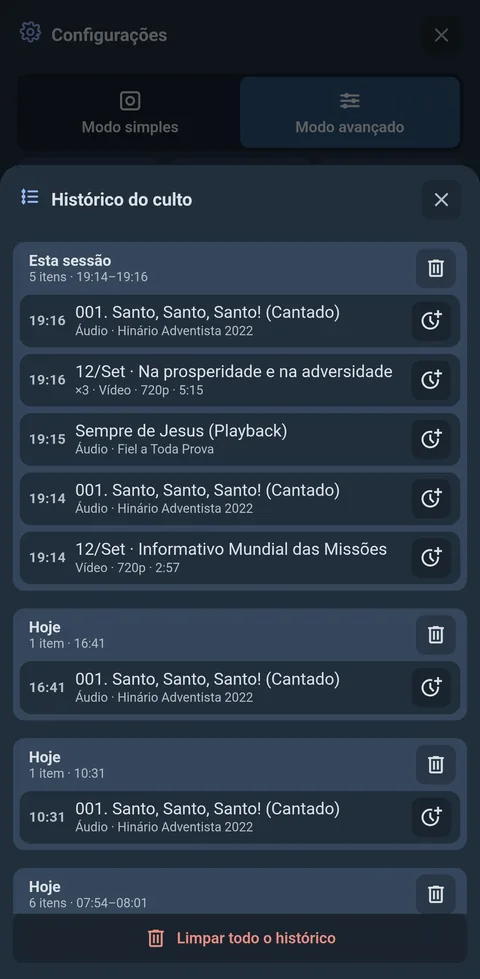

Este app é só para Android
O Áudio Visual IASD é um aplicativo Android — ele não funciona em computador, iPhone ou iPad. Para baixar e instalar, abra esta página por um aparelho Android.
Guia de instalação
- Baixe o app Baixar
- Permita a instalaçãoO Android barra o arquivo e oferece um atalho para Configurações. Toque nele, ligue Permitir desta fonte para o navegador que você está usando e volte — a instalação continua de onde parou.
- Verifique com o Play ProtectAceite a verificação — ela é o próprio Google conferindo o arquivo. Terminada, toque em Instalar para concluir.
Tudo o que o culto precisa
Só a projeção na TVVai à TV só o que você projeta — nunca o espelho do seu celular.
CronogramaOrganize as mídias em ordem e exiba na tela quando quiser.
Coletâneas offlineHinário 2022, o de 1996 e os álbuns oficiais. Baixe uma vez, toque sem rede.
Séries semanaisProvai e Vede e Informativo Mundial das Missões — o episódio do sábado, sozinho.
Letras das músicasA letra vai ao telão para a congregação cantar, e anda sozinha com a música.
CifrasOs acordes sobre a letra, no celular de quem toca. Sobe e desce o tom num toque.
Textos bíblicos66 livros e 1.189 capítulos, baixados uma vez com internet. Depois, sem rede.
FerramentasUm aviso escrito, um cronômetro na tela e um sorteio de números ou nomes.
YouTubeBusque e baixe dentro do app, sem anúncios. Fica guardado e toca sem rede.
SlidesPDF, PowerPoint ou Google Apresentações — a passagem de página na sua mão.
Conectar um computadorNo navegador, sem instalar nada — até três. Sem Wi-Fi, o celular serve.
Recebe de tudoFotos, vídeos, links e slides pelo compartilhar — WhatsApp, YouTube, galeria.
Playlist automáticaDiga um tema e o app monta a fila. Também como fundo, sem letra no telão.
Histórico do cultoO que tocou e a que horas. Um toque devolve o item ao Cronograma.
A projeção funciona sem internet: na TV, pelo espelhamento; num computador, pelo navegador. Basta o Wi-Fi do local — e sem nenhuma, o próprio celular vira o ponto de acesso.
Como é na prática










Modos de uso
O app abre no Modo Fácil: teclas grandes e só o essencial, para conectar a TV ou um computador e tocar um louvor. O resto fica no modo avançado, em Configurações — e Tocar neste celular libera a tela para ensaiar, sem nada conectado.